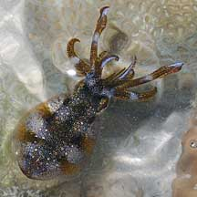
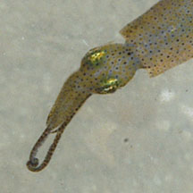
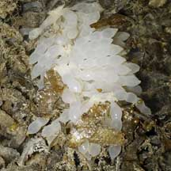
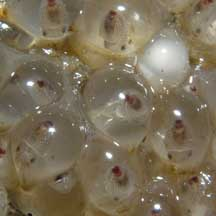

|
|
| cephalopods text index | photo index |
| Phylum Mollusca > Class Cephalopoda |
| Squids
and cuttlefish updated May 2020
Where seen? These amazing animals are seasonally common on many of our shores. Tiny squids are also common in seagrass areas, but often overlooked. Their eggs are also seasonally seen. Although better known as seafood, these delightful creatures are equally delicious to observe, with their colour changes and busy behaviour. They are more active at night. What are squids and cuttlefish? They are not fish! These animals are molluscs (Phylum Molusca) like snails, slugs and clams; and cephalopods (Class Cephalopoda) which include octopuses. Most of the commonly encountered cuttlefishes belong to Order Sepiida, while our commonly encountered squids belong to Order Teuthida, Family Loliginidae. The strange ball-shaped cuttlefish-like animals we see belong to Order Sepiolida. Some small squids and cuttlefish live in the shallow areas among the seagrasses. Others live in deeper waters and may get trapped in a pool at low tide. Features: From 1-2cm to about 10cm long. Compared to their more sedate cousins the slugs and snails, squids and cuttlefishes are fast-moving predators that hunt speedy prey like fish. They may also hunt snails and clams, crabs and prawns. Most have a horny bird-like beak to rip up prey. |
 A cuttlefish has fins all around its body. Changi, May 05 |
 Other squid have broad fins that extend the length of the body. Pulau Semakau, Apr 08 |
 The bobtail or bottletail squids are not streamlined at all! Changi, Jun 05 |
| Jet-propelled molluscs: Squids
and cuttlefish squirt a jet of water out of a funnel to zoom off in
the opposite direction. They can move in any direction, but move fastest
backwards. Squids tend to be more streamlined than cuttlefish. Squids
are among the fastest aquatic invertebrates, some can reach speeds
of up to 40km/hr. A cuttlefish can also hover or swim slowly by undulating
the fins along the sides of its body. A squid does not have this all-round
fin. Instead, the fin is limited to a triangular flap at the tip of
the body, which acts as stabilisers. Lightweight shell: Relying on speed, squids and cuttlefish do not have a thick, heavy outer shell. Their shells are reduced to lightweight internal bones. In squids, the bone is thin and narrow. In cuttlefish, these are flat surfboards riddled with tiny gas-filled chambers. By controlling the amount of gas in the cuttlebone, the cuttlefish can control its buoyancy. The cuttlebone is often seen on the beach among the flotsam. Cuttlebones are sold in pet shops as a source of calcium for caged birds. |
 Squids have a pair of onger tentacles that extend beyond the shorter arms. Pulau Hantu, Aug 03 |
 The tiny Pgymy squid can catch shrimps almost as big as itself. Tanah Merah, Aug 11 |
 Cuttlebone Chek Jawa, Mar 03 |
| Armed and Dangerous: Squids and
cuttlefish have eight arms. These arms are short and stout, with suckers
along their entire length. Some have toothed suckers and hooks for
an even better grip. In addition to the eight arms, squids and cuttlefish also have a pair of tentacles. These may be twice as long as the arms, are thinner and have spoon-shaped tips. Only the tips have suckers. A squid or cuttlefish uses these two longer tentacles to grab prey. These tentacles shoot out and retract in an eye blink, bringing the prey within the grasp of the eight shorter arms which firmly grip the prey for the killing bite with its sharp beak. |
 Squids taking on different colours. Tanah Merah, Jun 09 |
 Ink squirted out retains its shape. Sister Island, May 12 |
| Disappearing Ink: When alarmed, squids
and cuttlefish may squirt a cloud of 'ink'. The ink may contain substances
that affect the senses of other sea creatures. The inky clouded water
also allows it to make a getaway. Sometimes, mucous is also released
that 'holds' the ink into a shape that distracts the predator. Colourful Talk: Squids and cuttlefish can rapidly change colours and patterns (zebra stripes, spots and more) to hide from predators and prey by matching their surroundings. Cuttlefish can also change the texture of their skin. These colour changes are also used to communicate with each other, for example during courtship. In some species, males and females display different colours and patterns. Some squids and cuttlefish also glow in the dark, producing bioluminescence. This actually camouflages them from bottom dwelling predators which look upwards for prey. The glowing body of a squid allows it to blend in a moonlit sky, instead of appearing as an obvious dark shadow. |
 Some egg capsules commonly seen. Pulau Hantu, Feb 08 |
 Developing babies Changi, Jul 03 |

| Baby
squid and cuttlefish: Some squids gather in large groups
to spawn. To mate, the male grasps the female's arms in his and inserts
his sperm packets into her body. In some, male squids scrape or flush
out sperm packets from previous suitors before inserting their own.
To prevent this, some squid sperm packets have teeth to clamp firmly
onto the female's body! The female uses the sperm to fertilise her
eggs as she lays them. Eggs are laid in capsules, attached to hard objects and surfaces; or inserted into crevices and other hiding places. Some cuttlefish incorporate ink into the capsules, making them black. Squids usually mate only once in their life and die soon after mating and laying eggs. Cuttlefish don't produce as many eggs as squids. Here's more photos of squid and cuttlefish eggs sometimes seen. |
| Dive video of cuttlefishes courting and laying egg capsules deep in a colony of branching coral. Pulau Hantu, Aug 2020 |
| Human uses: People everywhere
enjoy eating squids and cuttlefish. In Asia, they may be eaten freshly
cooked, or they may be dried. They are also made into candied snacks.
In the past, cuttlefish ink, called 'sepia', was used for writing
and painting. Squids also have a role in human medical applications. Squids have gigantic nerve cells that are relatively easy to study. Much of what we know about our own nervous system is based on studies of squid nerve cells. Several Nobel prizes were based on such studies! The squid's efficient jet propulsion system is also inspiring designs for better underwater vehicles. Status and threats: None of our squids or cuttlefishes are listed among the endangered animals of Singapore. However, like other creatures of the intertidal zone, they are affected by human activities such as reclamation and pollution. Trampling by careless visitors and over-collection can also affect local populations. |
| Do you speak
cuttlefish? about colour and pattern changes in a cuttlefish and how these are used in mating, hunting and escaping predators. |
| Squids
and cuttlefishes recorded for Singapore from Tan Siong Kiat and Henrietta P. M. Woo, 2010 Preliminary Checklist of The Molluscs of Singapore. *Norman, Mark., 2000. Cephalopods: A World Guide. Order Sepiida
Order Teuthida
Order Sepiolida
|
Links
References
|